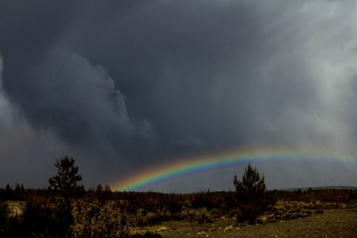
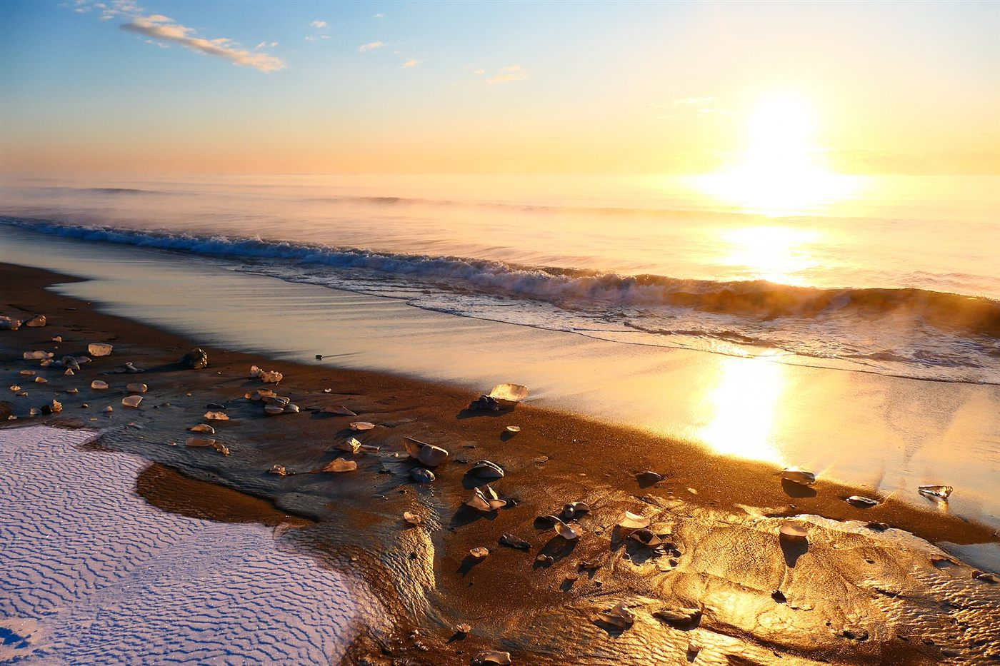
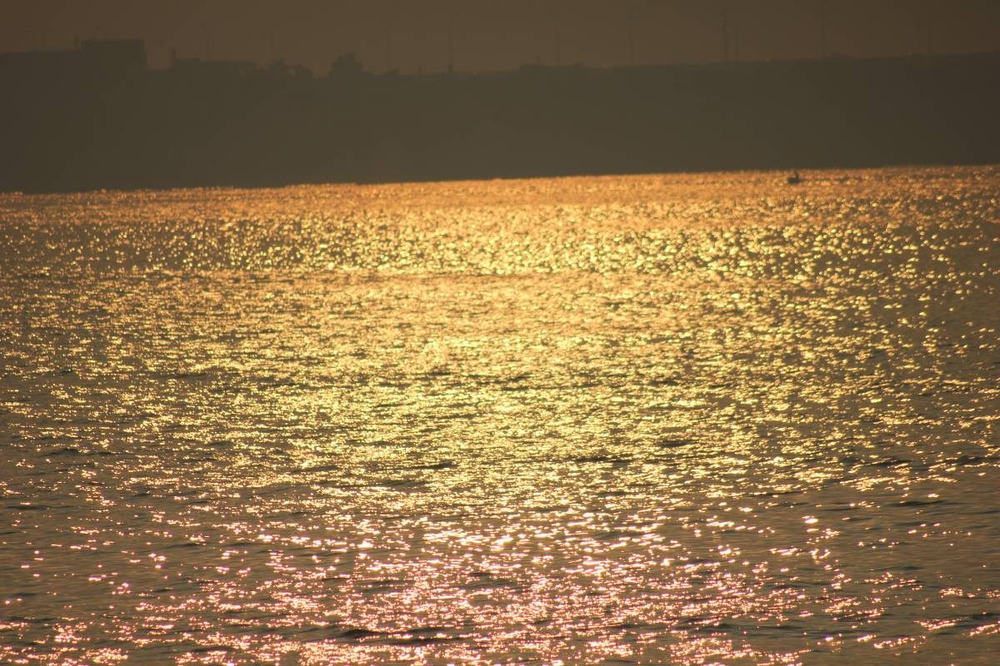
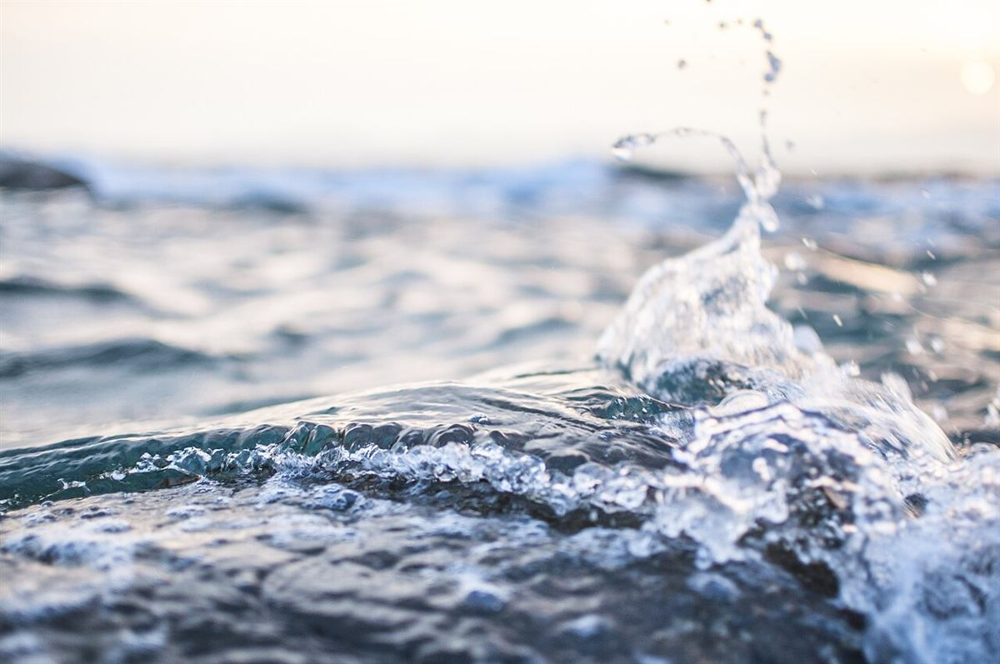

鳥取市白兎・海辺のハワイアンカフェ
AOAKUA
海の青のそばに、虹をかける場所。
店名はハワイ語で「虹」。白兎海岸を望む窓辺で、お客さまとの懸け橋になる時間を。営業時間などの詳細は準備中です。
Instagramを見るお店の由来・想い
虹を意味する名前のカフェ
AOAKUA(アオアクア)は、鳥取市白兎の国道9号沿い、白兎神社のすぐそばにあるハワイアンカフェです。店名はハワイ語で「虹」を意味し、「お客さんとの懸け橋となれるように」という願いが込められていると紹介されています。
店長さんがハワイで感動したマラサダドーナツを日本でも楽しんでほしい、という思いから、看板メニューとして提供されています。店主の田中友美さんは、来店者が「ほっこりとした緩やかな時間」を過ごせるよう、日々いろいろな人と交流することを目標に挙げています(2024年の取材記事)。
窓際の席からは白兎海岸が見え、店内からよく虹が見えることもあるそうです。
ここまでは公開されている取材記事などの情報です。サイトの配色や言葉づかいは、「海の青」と「虹」を手がかりにした制作側のイメージです。




口コミ
こんな声が聞こえてきそうです
以下は制作側が書いたイメージ例で、実在のお客さまの声ではありません。
窓の向こうに海が広がっていて、ドーナツを食べながらのんびりできました。
もちもちの生地が好きです。ドライブの途中に寄るのにちょうどいい場所だと思いました。
座敷席があるので、家族で気兼ねなく過ごせそうだと感じました。